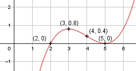

Aufgabe 30 f(x) = 0,2x3 - 2,4x2 + 9x - 10 f'(x) = 0,6x2 - 4,8x + 9, f''(x) = 1,2x - 4,8, f'''(x) = 1,2 Definitionsbereich: -∞ < x < ∞ Wertebereich: -∞ < f(x) < ∞ Asymptoten: - Symmetrie: - Nullstellen: 0,2x3 - 2,4x2 + 9x - 10 = 0 | :(0,2) x3 - 12x2 + 45x - 50 = 0 Durch Probieren gefunden x = 5. Hornerschema: 1 -12 45 -50 x1 = 5 5 -35 50 --------------------------- 1 -7 10 0 Polynomdivision: 0,2x3 - 2,4x2 + 9x - 10 : (x - 5) = 0,2x2-1,4x+2 -(0,2x3 - x2) ------------------ -1,4x2 + 9x - 10 -(0,8x2 + 7x) ------------- 2x - 10 -(2x - 10) ----------- 0 x2 - 7x + 10 = 0 p, q - Formel: p = -7, q = 10 x2,3 = x2,3 = 3,5 ± x2,3 = 3,5 ± x2,3 = 3,5 ± 1,5 x2 = 2 x3 = 5 (Berührpunkt, Extrempunkt) N1,2(5|0), N3(2|0) Schnittpunkt mit der y-Achse: f(0) = 0,2 * 03 - 2,4 * 02 + 9 * 0 - 10 = -10 Sy(0|-10) Extrempunkte: 0,6x2 - 4,8x + 9 = 0 |:0,6 x2 - 8x + 15 = 0 p, q - Formel: p = -8, q = 15 x1,2 = x1,2 = 4 ± x1,2 = 4 ± x1,2 = 4 ± 1 x1 = 5, f(5) = 0 x2 = 3, f(3) = 0,2 * 33 - 2,4 * 32 + 9 * 3 - 10 = 0,8 f''(3) = 1,2 * 3 - 4,8 < 0 --> Hochpunkt (3|0,8) f''(5) = 1,2 * 5 - 4,8 > 0 --> Tiefpunkt (5|0) Wendepunkte: 1,2x - 4,8 = 0 |+4,8 1,2x = 4,8 |:1,2 x = 4, f(4) = 0,2 * 43 - 2,4 * 42 + 9 * 4 - 10 = 0,4, f'''(4) ≠ 0 --> Wendepunkt (4|0,4) Graph:
